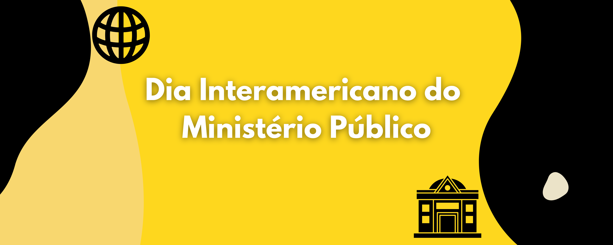

O Dia Interamericano do Ministério Público é uma data para refletirmos sobre a importância do trabalho ministerial em diversas áreas da sociedade.
O Dia 26 de novembro é uma data dedicada a celebrar o trabalho essencial do Ministério Público na defesa da sociedade. A data reforça a importância da instituição em garantir a justiça, a legalidade e os direitos humanos, promovendo uma atuação ética e transparente. Em muitos países da América Latina, o Ministério Público tem sido fundamental na luta contra a corrupção, a impunidade e no fortalecimento das instituições democráticas. A data é marcada por eventos que discutem a importância da independência do Ministério Público, além de sua atuação em diversas áreas, como a proteção dos direitos das minorias, a promoção da justiça social, e o combate a crimes ambientais.
O Ministério Público desempenha um papel fundamental na fiscalização das leis e da Constituição, sendo uma peça chave no equilíbrio entre os poderes do Estado. Sua função não se limita apenas a atuar em processos judiciais, mas também em ações preventivas e educativas, garantindo que os direitos da população sejam respeitados, e que os governantes sejam responsabilizados por suas ações. Essa data, portanto, é uma oportunidade para lembrar a importância da instituição para o fortalecimento da democracia e para a construção de um país mais justo e igualitário.
Além disso, o Ministério Público tem trabalhado em parceria com outras instituições para garantir o acesso à justiça para todas as pessoas, incluindo as que mais necessitam de proteção. Em muitos casos, a atuação do Ministério Público foi determinante para garantir direitos fundamentais, como a educação, saúde e segurança, para a população mais vulnerável. Com isso, o Dia Interamericano do Ministério Público se torna um momento de reflexão sobre os avanços conquistados e os desafios que ainda precisam ser enfrentados para uma sociedade mais justa e igualitária para todos.